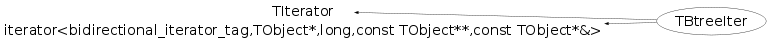

class TBtreeIter: public TIterator, public iterator<bidirectional_iterator_tag,TObject*,long,const TObject**,const TObject*&>
TBtreeIter Iterator of btree.
This class is also known as (typedefs to this class)
TBtree::Iterator_tFunction Members (Methods)
public:
| TBtreeIter(const TBtreeIter& iter) | |
| TBtreeIter(const TBtree* t, Bool_t dir = kIterForward) | |
| virtual | ~TBtreeIter() |
| static TClass* | Class() |
| virtual const TCollection* | GetCollection() const |
| virtual Option_t* | TIterator::GetOption() const |
| virtual TClass* | IsA() const |
| virtual TObject* | Next() |
| virtual bool | operator!=(const TIterator& aIter) const |
| bool | operator!=(const TBtreeIter& aIter) const |
| TObject* | TIterator::operator()() |
| virtual TObject* | operator*() const |
| virtual TIterator& | operator=(const TIterator& rhs) |
| TBtreeIter& | operator=(const TBtreeIter& rhs) |
| virtual void | Reset() |
| virtual void | ShowMembers(TMemberInspector& insp) |
| virtual void | Streamer(TBuffer& b) |
| void | StreamerNVirtual(TBuffer& b) |
private:
| TBtreeIter() |
Class Charts
{kind=link}
{kind=link}
{kind=link}
{kind=link}
